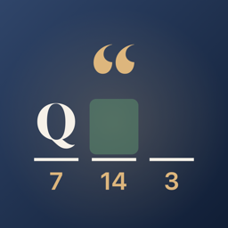

A daily quote puzzle. Every letter in a famous quote is swapped for a number; crack the code to reveal it.
Open a ticket on the support page on GitHub. Tell us your device, iOS version and what happened, and we'll get back to you.
How do I play? Tap a blank and type the letter you think it is. If you're right, it fills in everywhere that number appears. A wrong letter costs a mistake. Solve the whole quote before you run out.
What are pencil marks? Turn on Pencil to write a guess as a small note. Notes never cost a mistake, and you can clear them with the erase key.
How does the daily puzzle work? A new quote arrives at midnight, the same for everyone. You get one try. Solving it keeps your streak going.
What happens if I run out of mistakes? The quote goes back into the pile and you can try it again tomorrow.
What is Zen Mode? Turn it on in Settings to hide the timer and mistake counter. You can't run out of mistakes in Zen Mode.
Where are the quotes I've solved? In Your Library on the home screen. Tap the heart to save a favorite, or the share button to make a quote card.
How do I add the widget? Touch and hold your Home Screen, tap Edit, then Add Widget, and choose Decoded. It shows today's puzzle and your streak.
How do I see leaderboards? Sign in to Game Center in the Settings app, then tap the controller button on Decoded's home screen.
Will my progress move to a new phone? Yes. Your progress is kept in your own iCloud account and comes back when you sign in with the same Apple Account.
The developer collects no data. Read the full privacy policy.